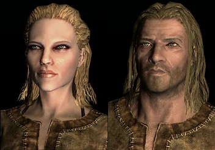
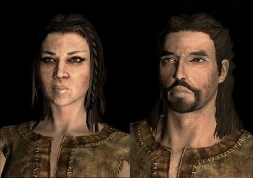
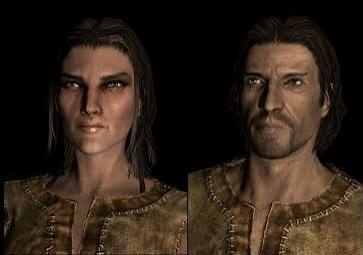
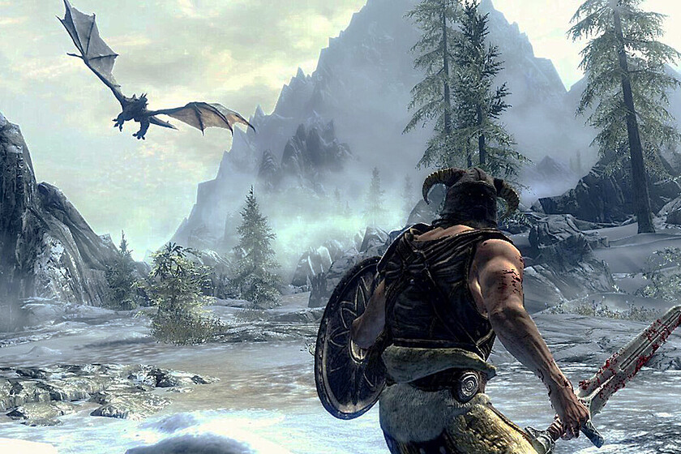

Bienvenido a esta web, dónde podrás explorar las tierras de Skyrim, descubrir nuevos lugares, luchar contra dragones y conocer a su variedad de población

 |
Humanos altos y rubios nativos de la provincia de Skyrim, también conocidos como los Hijos de la Nieve. |
|---|---|
 |
Raza humano-élfica originaria de Roca Alta, famosa por su afinidad natural con la magia |
 |
Raza humana originaria de Cyrodiil con rasgos faciales de tipo mediterráneo y piel ligeramente más oscura que la de los nórdicos o bretones |
|
Raza humana originaria de la provincia desértica de Páramo del Martillo (Hammerfell), destacan por ser los guerreros más talentosos de Tamriel, ágiles espadachines y hábiles con armas de una mano y escudos |
| Altmer, o altos elfos, son los más fuertemente dotados en las artes arcanas de todas las razas |